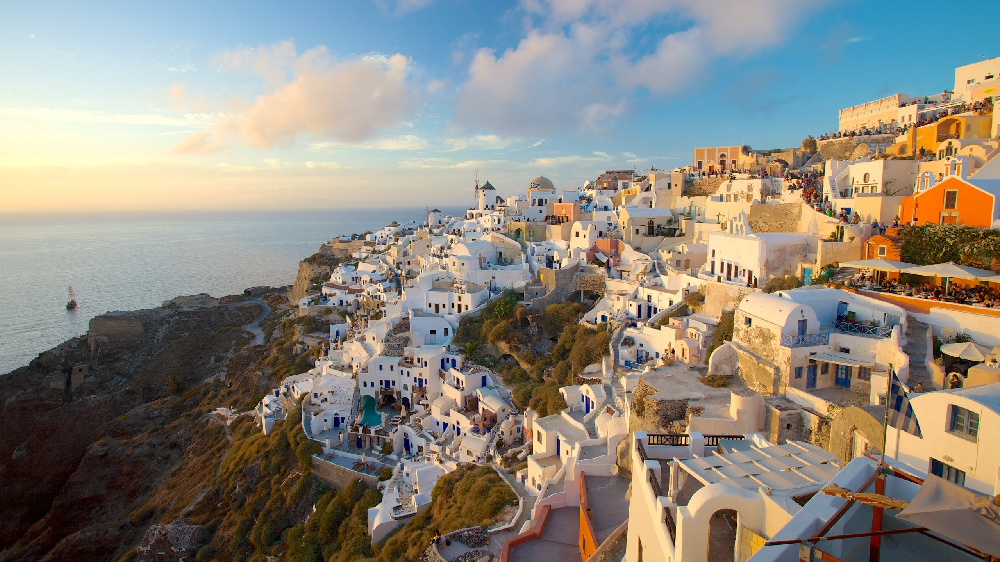
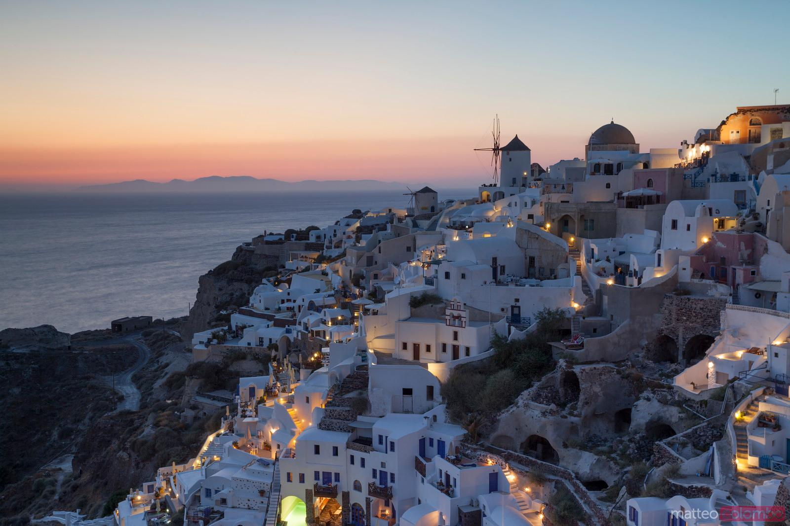
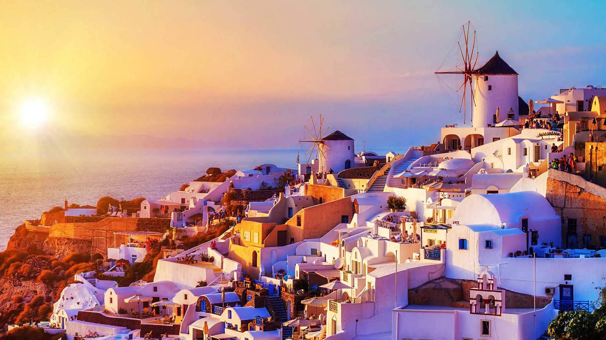
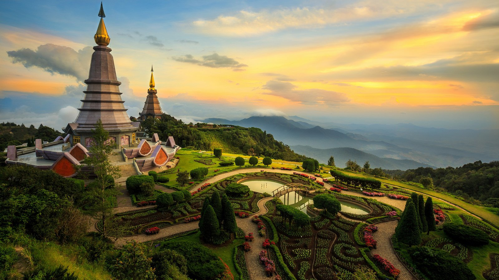
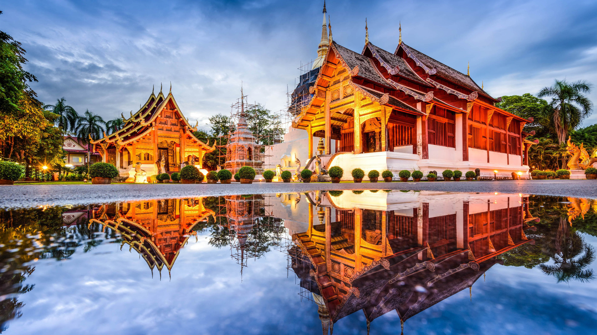
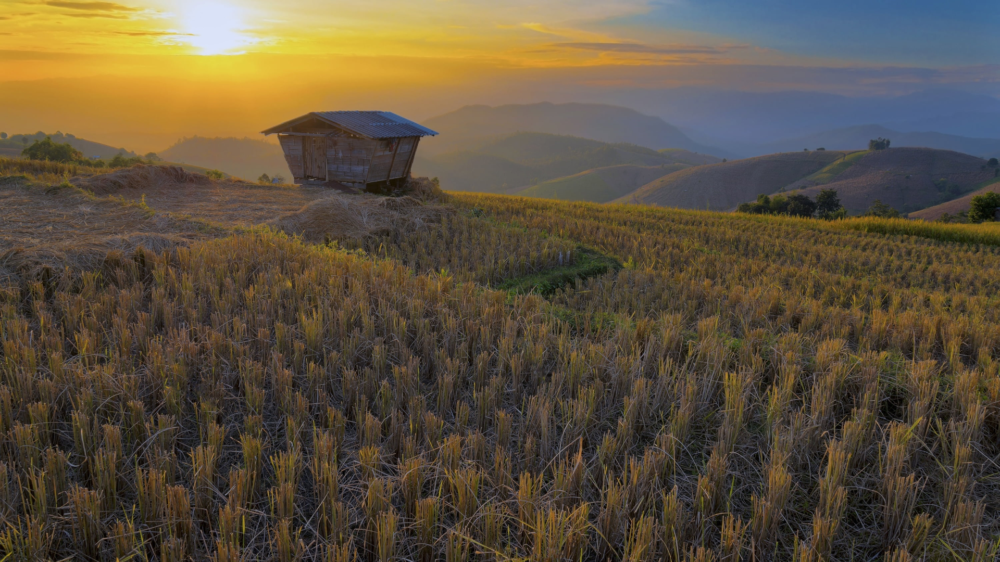

Es una de las ciudades más fotografiadas de Noruega. Su barrio antiguo, Bryggen,
ocupado en su día por la Liga Hanséatica, es la postal de casas de colores que nos llevamos de la
ciudad. Está situada entre siete colinas, alguna de ellas conocidas por ser el lugar donde residen
sus populares trolls.
También es la puerta de entrada a los fiordos noruegos, por lo que no sorprende que sea una de las
paradas imprescindibles para contemplar esta maravilla de la naturaleza.
Ubicacion
El nombre de Bergen origina del nórdico antiguo, formado con las palabras Bergvin y
Bjǫrgvin, (en islandés y feroés la ciudad aún es llamada Björgvin). El primer elemento
con el que se forma el nombre de Bergen es Berg o bjǫrg, que se traduce como «montaña». El último
elemento es vin, que se refiere a un asentamiento donde solía haber un pastizal o pradera. El
significado completo es entonces «el prado en las montañas».
Algunas zonas de Bergen fueron reconstruidas tras la Segunda Guerra Mundial, arreglando los
desperfectos causados por los bombardeos británicos y la explosión del barco cargado de explosivos,
con el problema añadido que supuso la existencia de unos planes urbanísticos irreflexivos. Todavía
se demuelen manzanas enteras de viejas casas de madera en el centro de la ciudad, recientemente en
Nøstet y Krinkelkroken. Por ello se combinan a veces en la ciudad zonas de arquitecturas muy
diferentes.
Aquí un enlace a su página oficial.
Video de Bergen | Fuente: youtube/visitBergen
Oia



Oia, llamado también Ià, es probablemente el pueblo más hermoso y pintoresco de Santorini
(Grecia). Las iglesias de cúpulas resplandecientes y las viviendas troglodíticas que
parecen suspendidas en el vacío representando Grecia a la perfección y que ya forman de nuestra
imaginación colectiva.
Construído en lo alto sobre el borde de la Caldera, tiene pequeños callejones, un panorama
espectacular, tiendas muy cuidadas, agradables museos, numerosas galerías de arte y las ruinas de la
fortaleza veneciana, dando al pueblo de Oia un carácter único y fascinante.
Ubicacion | Fuente: google maps.
En la segunda mitad del siglo XIX, Oia era un centro muy rico y en pleno desarrollo y podía
comerciar con Rusia, el Levante y Alessandria de Egipto. Un inmenso astillero bajo el acantilado.
Los oficiales y los capitanes de marina vivían en bonitas viviendas en la cima del acantilado,
mientras los marineros vivían en las viviendas troglodíticas.
Al contrario que Fira, Oia ha intentado e intenta aún hoy en conservar intacto su atractivo, huyendo
así del turismo de masa. A pesar de ello, en la calle principal son muchas las tiendas de lujo y las
joyerías… y a pesar de ello el atractivo del pasado se percibe en el aire, y además desde Oia se
puede disfrutar de una vista absolutamente única sobre la bahía y sobre el volcán.
Video de Oia | Fuente: youtube/celebritiCruises
Chiang Mai



Situada en el norte de Tailandia, a orillas del río Ping, Chiang
Mai ha atraído durante mucho tiempo a comerciantes y viajeros a sus orillas.
Antaño capital del reino de Lan Na, su centro histórico está protegido y rodeado de
antiguas murallas. Encerrado entre ellas, se pueden encontrar increíbles templos, pagodas, estupas y
museos, siendo Wat Phra Singh su atracción más famosa. Si bien la ciudad tiene un encantador
ambiente relajado, su maravilloso bazar nocturno bulle de vida y no hay que perdérselo.
Ubicación |Fuente: google maps
El rey Mengrai fundó la ciudad de Chiang Mai (que significa "ciudad nueva") en 1296
y sucedió a Chiang Rai como capital del reino de Lanna. Mengrai construyó un foso y un muro
alrededor de la ciudad para protegerla contra las incursiones desde Birmania. Con el declive del
poderío del reino de Lanna la ciudad perdió importancia y fue ocupada a menudo por los birmanos y
por los thais del reino de Ayutthaya.
Como resultado de las guerras birmanas, que terminaron con la caída de Ayutthaya en
abril de 1767, el territorio de Chiang Mai se convirtió formalmente en parte de Siam en 1774, cuando
el rey tailandés Taksin se lo arrebató a los birmanos, pero la ciudad quedó despoblada y sus
habitantes la abandonaron entre 1776 y 1791. Durante ese período Lampang funcionó como capital de lo
que quedaba de Lanna.
Chiang Mai emergió posteriormente como centro cultural, comercial y productivo hasta adoptar su
estatus actual en que se la considera la capital oficiosa del norte de Tailandia, y la segunda
ciudad en importancia del país, solamente superada por Bangkok.
Video de la montaña | Fuente: youtube/islandHopper